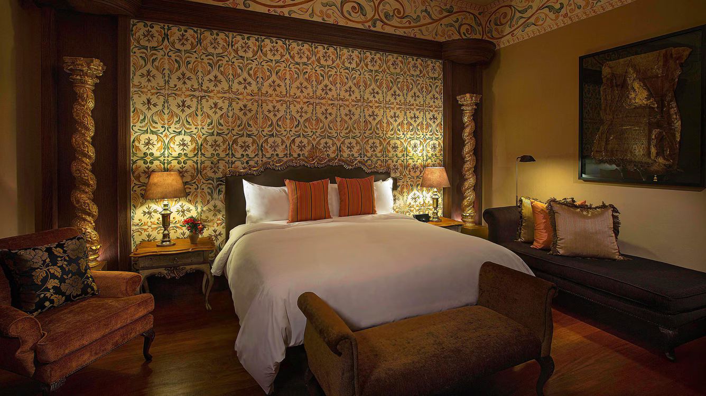
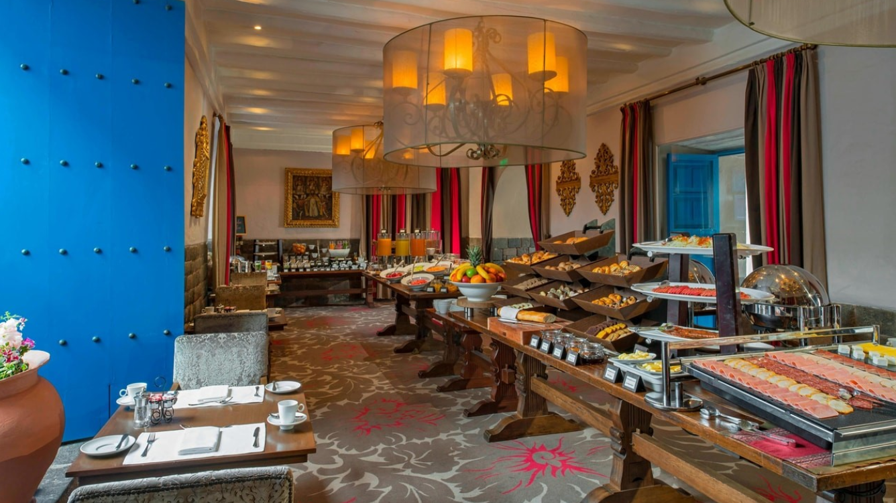
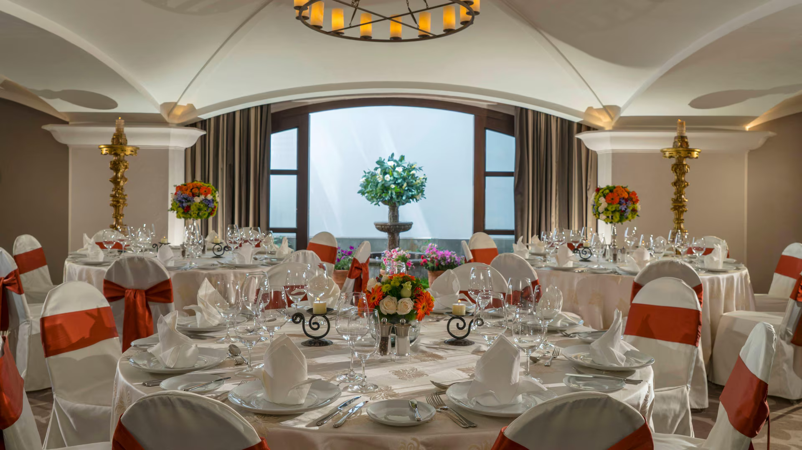

¡LO QUE TE OFRECEMOS!
TU REFUGIO DE LUJO TU EXPERIENCIA UNICA

➸RESERVA TU ESTADIA IMPERIAL
Cada una de las encantadoras habitaciones y suites del hotel ha sido restaurada, para ofrecer a nuestros huéspedes un confort moderno que conserva nuestro preciado patrimonio colonial. Los ricos tejidos, las preciosas antigüedades y los techos pintados a mano evocan la belleza característica del Cusco histórico y proporcionan a los huéspedes una experiencia hotelera única. Duerme plácidamente en nuestras ornamentadas camas con sus frescas sábanas de algodón y lujosos colchones. Nuestros baños de mármol con artículos de tocador de lujo ofrecen a los huéspedes una experiencia de spa desde la comodidad de su propia habitación de hotel.

➸DESCUBRE EL PASADO
Nuestros emocionantes tours te llevan desde las misteriosas Líneas de Nazca hasta la majestuosidad de Machu Picchu. Comenzamos con un vuelo privado desde Ica, donde también tenemos un hotel. Descubre los geoglifos de monos, colibríes y arañas desde las alturas. Luego, en Cusco, explora el Templo del Sol y el mercado indígena en el Valle Sagrado. Finalmente, asciende a Machu Picchu, camina por sus terrazas y admira las vistas panorámicas. En el Palacio del Inka, cada habitación combina historia y lujo, con camas ornamentadas, baños de mármol y balcones privados con vistas a Cusco o a los Andes. ¡Ven y vive la magia de Perú con nosotros!

➸LOS SABORES DEL PASADO
Disfruta de los fascinantes sabores locales de Perú en uno de los exquisitos restaurantes en las instalaciones del hotel, Inti Raymi. Prueba la cocina local e internacional preparada por nuestros expertos culinarios en un ambiente romántico y transformador. Para disfrutar de una experiencia gastronómica verdaderamente inolvidable, siéntate en nuestra terraza al aire libre con vistas al encantador patio. El restaurante Inti Raymi sirve gastronomía tradicional peruana elaborada con ingredientes locales de los Andes. La historia de Rumi Bar se realza al presentar nuestro muro inca original, mientras se puede disfrutar del primer Pisco Sour servido en un hotel de lujo hace 40 años.

➸CITA CON LA HISTORIA
Sumérgete en un viaje a través del tiempo mientras participas en nuestros eventos culturales.
Desde charlas con arqueólogos hasta demostraciones de danzas ancestrales, aquí tienes un adelanto
de lo que podrías disfrutar:
Conferencias Históricas: Escucha a expertos que desentrañan los misterios de los incas y la historia de Cusco.
Noches de Arte y Música: Admira exposiciones de artistas nacionales y disfruta de conciertos en nuestro patio colonial.
Rituales Andinos: Únete a ceremonias de agradecimiento a la Pachamama y descubre la espiritualidad andina.